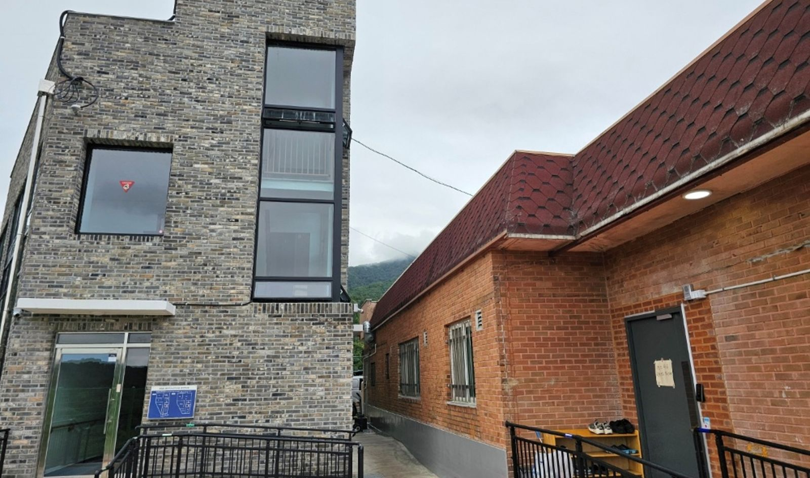

경기도 남양주시 장애인거주시설
샬롬의집은 이용인 한 사람 한 사람의 존엄성을 존중하며, 지역사회 안에서 자립적이고 행복한 삶을 살아갈 수 있도록 사랑과 섬김으로 함께합니다.
바로가기
설립 목적, 운영 법인, 시설 현황을 소개합니다.
자립 생활, 건강, 인권, 가족 지원 등 주요 사업입니다.
입소 대상과 상담부터 입소까지의 절차입니다.
예산·결산 등 사회복지시설 공시 자료입니다.
후원 계좌와 자원봉사·실습 안내입니다.
주소, 연락처, 지도입니다.
샬롬의집의 공지사항, 활동 소식, 공시 자료는 보호자와 지역사회가 함께 이용하는 공식 네이버 카페에 게시하고 있습니다.